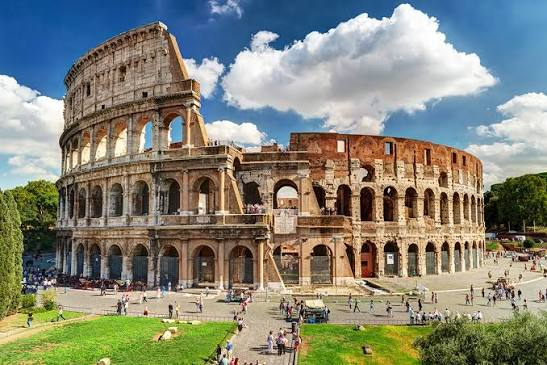

Coliseo Romano

Descripción
El Coliseo Romano es uno de los monumentos más representativos del Imperio Romano. Fue construido como un enorme anfiteatro donde se realizaban espectáculos públicos, incluyendo combates de gladiadores, representaciones teatrales y eventos para el entretenimiento de la población.
Su impresionante arquitectura demuestra el avanzado conocimiento de ingeniería de los romanos, especialmente en el uso de arcos, bóvedas y sistemas de distribución para grandes multitudes.
Ubicación
Se encuentra en la ciudad de Roma, Italia, cerca del antiguo Foro Romano. Actualmente es uno de los lugares turísticos más visitados del mundo.
Curiosidades
- Podía albergar aproximadamente entre 50.000 y 80.000 espectadores.
- Su nombre original era Anfiteatro Flavio.
- Fue declarado Patrimonio de la Humanidad por la UNESCO en 1980.
- Es considerado un símbolo de la ingeniería y arquitectura romana.
Datos importantes
Fue construido durante la dinastía Flavia, iniciando su construcción en el año 72 d.C. bajo el emperador Vespasiano y siendo inaugurado en el año 80 d.C. por el emperador Tito.